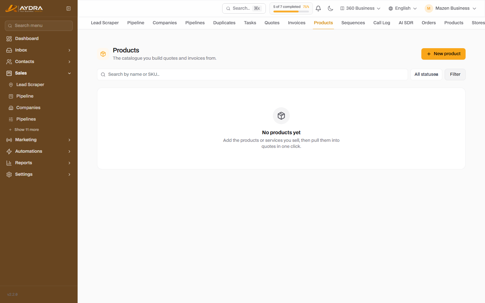
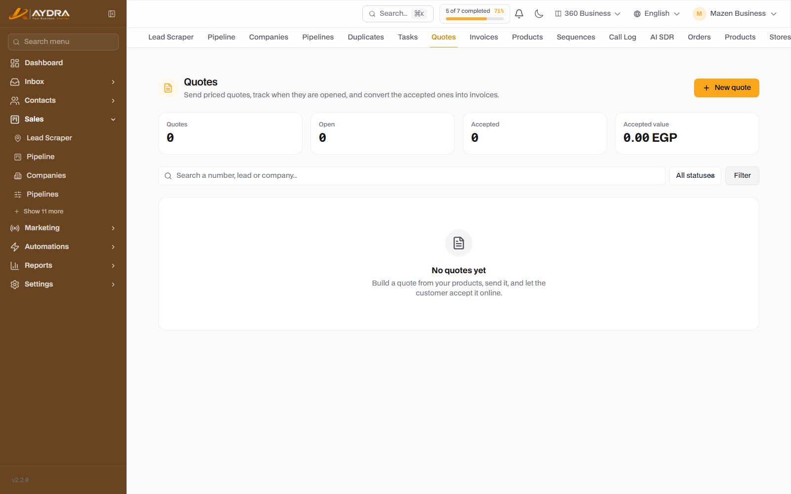
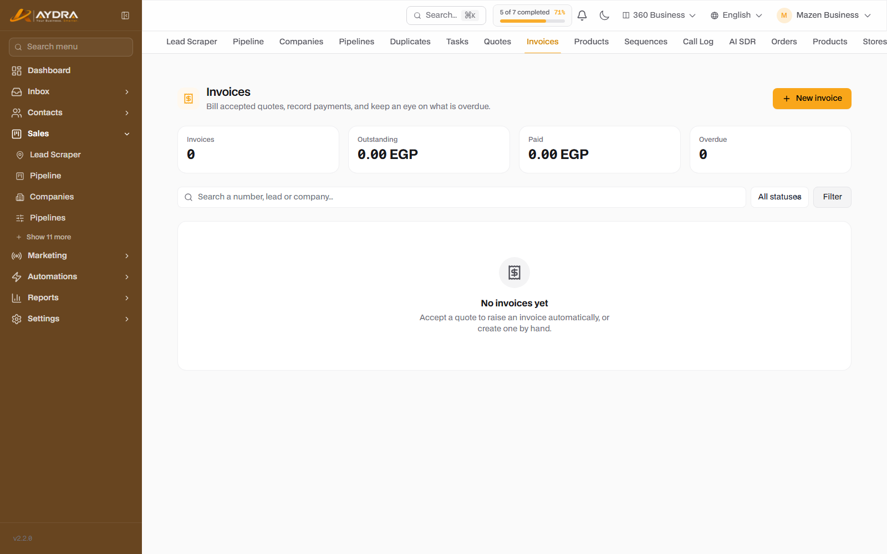
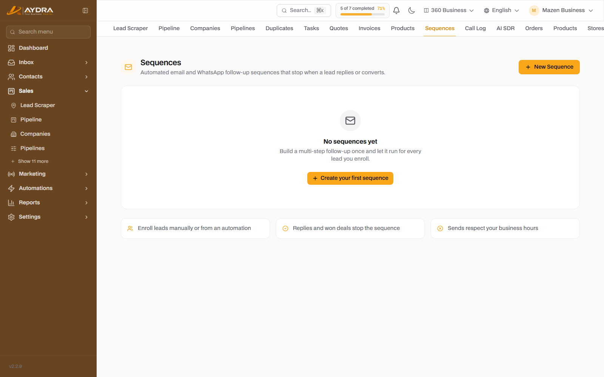
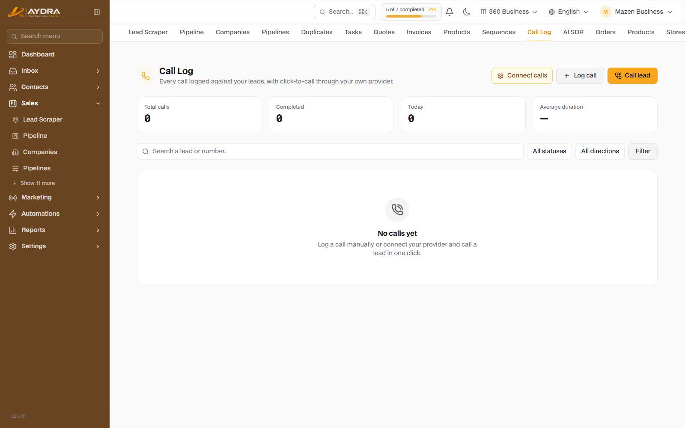
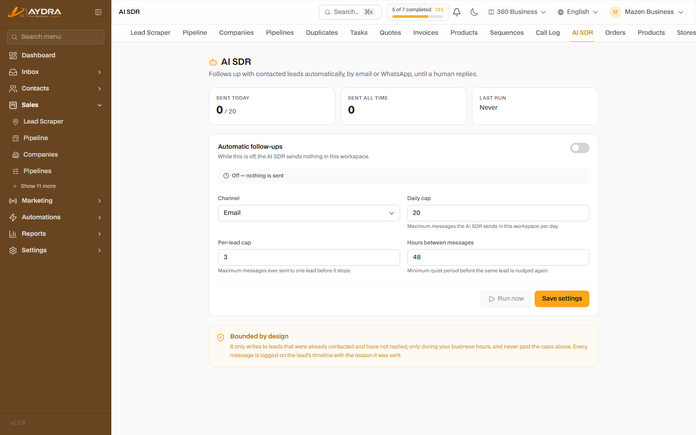

Sales, Quotes & Invoices
Once a lead is ready, this is where you close the deal: products, a quote, an invoice, automated follow-up, and recorded calls. Every section below stands on its own — start with products.
These screens are included in plans that contain Quotes, Sequences and Call Logs. If you do not see them in the sidebar, check your plan.
1. Products

Go to Sales ← Products. Products are the foundation from which quote and invoice line items are built.
- Add the product: name, description, price, currency, and unit.
- You can add images or links if included.
- Products not linked to an online store are managed manually.
- When building a quote, select the products and set the quantities.
2. Quotes

Go to Sales ← Quotes.
- Click New quote.
- Choose the customer (a contact or a lead).
- Add the line items: product, quantity, price, discount, tax.
- Set the validity period and the terms.
- Save as a draft, then click Send.
What happens after sending
- The customer receives a secure public link (no login required).
- They can accept or reject the quote from the same link.
- They can download a PDF copy.
- The quote status updates automatically in the system.
Converting a quote to an invoice
After acceptance, click Convert to invoice — the line items and customer are copied and it becomes a collectable invoice.
3. Invoices

Go to Sales ← Invoices.
- Create a new invoice (or convert an accepted quote).
- Review the line items and the due date.
- Send it to the customer — they receive a public link + PDF.
- Record payments from the Add payment button (full or partial).
- The invoice status appears: unpaid / partially paid / paid.
Tax is calculated according to the platform's tax settings. Make sure the tax rate is configured before issuing your first invoice.
4. Email sequences (Sequences)

Automated follow-up across several email steps. Go to Sales ← Sequences.
- Create a new sequence.
- Open the Builder and add the steps: first email, wait, second email... and so on.
- Write the subject and body of each step, and use the variables (customer name...).
- Activate the sequence.
- Add contacts/leads manually or via automation (the "enrol in a sequence" action).
- There is an automatic unsubscribe link in every email (One-click Unsubscribe).
- Anyone who unsubscribes appears under Unsubscribed and does not receive further steps.
- The sequence can be paused without deleting it.
5. Call log (Call Log)

Go to Sales ← Calls (includes Click-to-Call if a call provider is configured).
- Click the customer's number to start a call (Click-to-Call).
- After the call ends, log the outcome: connected, no answer, busy, or add a call manually.
- Add your call notes.
- If the AI Sales feature is available, use Summarise call to turn the transcript into a summary and follow-up points (consumes tokens).
6. AI SDR

An automated sales rep that follows up with leads automatically until a human replies. Go to Sales ← AI SDR.
- Enable the feature.
- Set the tone, messages, working hours and number of follow-ups.
- Click Start to begin the run.
- The sequence stops automatically as soon as the customer replies, and hands over to you.
AI SDR consumes AI tokens. Monitor usage from the AI reports, and start with a small number of follow-ups.
7. AI sales assistant
Inside the lead profile (AI Sales feature) you will find:
- Lead Coach: suggestions for the next step and a follow-up message.
- Smart tags: automatic classification of interest.
- Conversation summary: a quick summary of the latest interactions.
All of these features consume from the monthly token limit.
Common problems
| Problem | Cause | Fix |
|---|---|---|
| The "Send quote" button does not work | The customer has no email or SMTP is not configured | Add an email and test the mail server |
| The customer did not receive the quote | The email is in Spam or SMTP failed | Send the link manually and test SMTP |
| Cannot convert to an invoice | The quote is not accepted yet | Accept it manually or wait for the customer |
| The sequence does not send | It is not activated or the user is unsubscribed | Check the status and the unsubscribed list |
| A call does not start | The call provider is not configured | Configure the call settings first |
| "You have reached the token limit" | High AI usage | The data still works, but new requests stop — upgrade your plan |
Next step: connect sales to marketing with the Campaigns & Social guide.